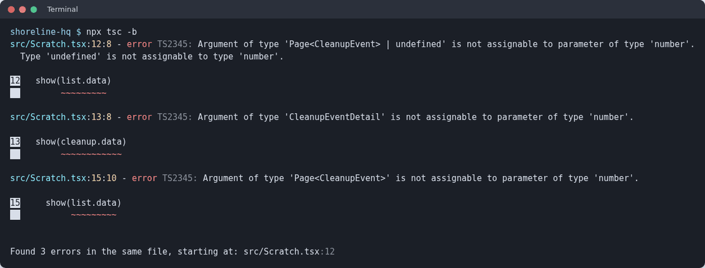
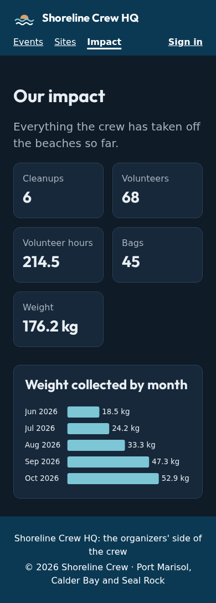

🗃️ Lesson 7.1: TanStack Query
Open a cleanup, go back, open it again: the HQ asks shoreline-api twice for the same answer, and the events list still jumps to the top when you come back. The HQ fetches well, but it has no memory. Today it gets one. TanStack Query keeps every answer from the API in a shared cache, under a key you design, decides when an answer is old enough to ask again, and gives each component a typed result. You will move every page onto it, delete useApi, and use what you have built to add a page the HQ has been missing: the crew's impact dashboard.
🎯 Learning Objectives
By the end of this lesson, you will be able to:
- Explain what server state is, and what a cache adds to fetching it
- Set up a
QueryClientand write typedqueryOptionsfactories with keys that include everything the answer depends on - Read a query's result with
useQuery, narrowing it withisSuccess, and keep the last list on screen withplaceholderData - Choose
staleTimeandretrysettings and explain the requests they cause - Fill the cache from route loaders and read it with
useSuspenseQuery, with a Try again that really tries again
📦 Code for this lesson
Starting code: lesson-24-start.zip · Finished code: lesson-24-end.zip. Each folder has a README with the commands to run it. Copy .env.example to .env.local in shoreline-hq before npm run dev.
In This Lesson
🌊 Server State Is Borrowed
Most of what the HQ shows is not its own. The cleanups, the sites and the crew live in shoreline-api; the HQ holds a copy, and that copy starts to age the moment it arrives. Another organizer may publish a cleanup a minute later. That kind of data is called server state, and it needs different care from client state, the things only this browser knows:
| Server state | Client state | |
|---|---|---|
| Who owns it | The API; the app has a copy | The app |
| Can it change behind your back? | Yes: other people, other devices | No |
| Questions it raises | Is my copy still good? Who else needs it? What if the request fails? | Where should it live so the right components see it? |
| In the HQ | Cleanups, sites, the crew, impact numbers | An open dialog, the check-in marks, a typed search box |
| Tool | TanStack Query (today) | useState, useReducer, context, and Zustand in Lesson 7.3 |
useApi from Lesson 4.2 fetched server state well, but it forgot everything when its component unmounted. Every visit asked again, two components asking for the sites sent two requests, a failed request was never retried, and a list could not render at once when you came back, so the router restored the scroll position into an empty page. You could add each of those to useApi yourself. TanStack Query (the library many people still call React Query) is what that looks like after years of other people's bug reports.
💡 Mental model: the harbor office's logbook
Before, every crew member who needed the tide times walked to the tide station and read the gauge. Now the harbor office keeps a logbook. Each entry has a label ("tide times, Calder Bay"), the reading, and when it was taken. Ask for an entry: if it is recent, you get it at once; if it is a bit old, you get it at once and someone walks to the station to update it; if there is no entry, someone walks there and you wait. The labels are the query keys, the walk is the query function, "recent" is staleTime, and the logbook is the QueryClient.
Why it matters: on a team you will rarely write a fetching effect by hand any more. You will write query keys and query functions, and most bugs you meet ("the list didn't update", "it shows the old person's data") will be cache questions. Learning to think in keys is the skill.
🔑 The Cache and Its Keys
Three pieces set it up. npm install @tanstack/react-query adds the library (two packages: @tanstack/react-query and the framework-free @tanstack/query-core it builds on). A QueryClient is the cache itself, created once, outside React, so loaders can reach it too. And <QueryClientProvider client={queryClient}> near the top of the tree lets every component's Hooks find it.
Each piece of data needs a query key and a query function. The key is an array, and it is the entry's label: two components with equal keys share one entry and one request. The rule that keeps a cache honest: the key holds everything the answer depends on. The events list depends on the search and on who is asking (organizers also get drafts), so both are in its key. The sites are the same for everyone, so their key is just ['sites'].
Writing the key and the function together in one place is what queryOptions is for. The HQ gets one small factory per kind of data:
/** Cleanups for a search string such as 'status=scheduled&perPage=50' (drafts for organizers) */
export function eventsQuery(search: string, viewer: string) {
return queryOptions({
queryKey: ['events', 'list', search, viewer],
queryFn: ({ signal }) => getEvents(search, signal),
})
}The query function receives an object with a signal, an AbortSignal that TanStack Query aborts when nobody needs the answer any more, so the cancel logic from Lesson 4.1 comes for free. The function must return a promise that rejects on failure; getEvents already throws an ApiError for error statuses, so nothing changes in client.ts.
Keys are compared item by item, and a shorter key works as a filter for longer ones. That is why the HQ's keys start general and get specific: in Lesson 7.2, after saving a cleanup, one call with ['events'] marks every list, detail and roster as out of date.
| Factory | Key | Why these parts |
|---|---|---|
sitesQuery() | ['sites'] | Public, the same for everyone |
eventsQuery(search, viewer) | ['events', 'list', search, viewer] | Drafts only reach organizers |
eventQuery(eventId, viewer) | ['events', 'detail', eventId, viewer] | A draft is "not found" for guests |
eventImpactQuery(eventId) | ['events', 'impact', eventId] | Public |
rosterQuery(eventId, viewer), volunteersQuery, volunteerQuery | …with the viewer last | Organizers only: never share them with a guest |
impactTotalsQuery() | ['impact'] | Public |
The viewer is the signed-in person's id or 'guest', the same idea as useApi's viewer since Lesson 5.2: who asks is part of the question. Sign out on the events list and the key changes, so the page asks for the guest list instead of showing the organizer's from the cache.
🔍 Reading a Query, Typed
A component reads a query with useQuery(eventsQuery(search, viewer)). The result is an object, and the part to learn first is that it is a discriminated union, like the LoadState you wrote in Lessons 2.2 and 4.1, with status as its tag:
status | Shortcut | data | Means |
|---|---|---|---|
'pending' | isPending | undefined | No data yet |
'error' | isError | usually undefined | The last attempt failed (see error) |
'success' | isSuccess | the data | There is data to show |
Separately, isFetching says whether a request is running right now. A query can be 'success' and fetching at the same time: that is a background refresh. Because isSuccess is part of the union, checking it narrows data. And you never wrote a type argument: TypeScript takes the data type from the factory's query function. The trick from Lesson 6.3 shows it, passing results to a function that wants a number:
import { useQuery, useSuspenseQuery } from '@tanstack/react-query'
import { eventQuery, eventsQuery } from './api/queries.ts'
// What do the query Hooks give back? Hand each result to a function that wants a number.
function show(value: number) {
return value
}
export function Scratch() {
const list = useQuery(eventsQuery('perPage=50', 'guest'))
const cleanup = useSuspenseQuery(eventQuery('e08', 'guest'))
show(list.data)
show(cleanup.data)
if (list.isSuccess) {
show(list.data)
}
return null
}
useQuery's data may be undefined until isSuccess narrows it; useSuspenseQuery's never is.Expected output
src/Scratch.tsx:12:8 - error TS2345: Argument of type 'Page<CleanupEvent> | undefined' is not assignable to parameter of type 'number'.
Type 'undefined' is not assignable to type 'number'.
12 show(list.data)
~~~~~~~~~
src/Scratch.tsx:13:8 - error TS2345: Argument of type 'CleanupEventDetail' is not assignable to parameter of type 'number'.
13 show(cleanup.data)
~~~~~~~~~~~~
src/Scratch.tsx:15:10 - error TS2345: Argument of type 'Page<CleanupEvent>' is not assignable to parameter of type 'number'.
15 show(list.data)
~~~~~~~~~
Found 3 errors in the same file, starting at: src/Scratch.tsx:12Before the check, data is Page<CleanupEvent> | undefined; inside if (list.isSuccess) it is Page<CleanupEvent>. useSuspenseQuery (later in this lesson) never returns without data, so its data has no undefined at all.
Keeping the last list on screen
A new search means a new key, and a new key has no data yet: the query goes back to 'pending' and the page would say "Loading the cleanups…" after every pause in typing. useApi kept the old data instead; TanStack Query does it when you ask, with placeholderData: keepPreviousData. Options are a plain object, so a page can add one to a factory's options with a spread:
const viewer = viewerId(session)
const sites = useQuery(sitesQuery())
// While the next search loads, keep showing the last list (not "Loading…" for every search)
const events = useQuery({
...eventsQuery(params.toString(), viewer),
placeholderData: keepPreviousData,Measured with the API slowed down by --latency=800: typing "pelican" never showed "Loading the cleanups…"; the 15 cleanups stayed until the 3 matches replaced them. Without placeholderData, the list disappeared and "Loading the cleanups…" took its place. While the old list is on screen, isPlaceholderData is true (Exercise 1 uses it).
🧩 Version note: TanStack Query 5.107
This lesson uses the newest way to fill the cache from outside a component, queryClient.query(). In 5.107 the older ensureQueryData, fetchQuery and prefetchQuery are marked deprecated (VS Code draws a line through them) and still work, so you will see them in many articles. ensureQueryData(options) is the same as query({ ...options, staleTime: 'static' }).
⏱️ Fresh, Stale and Retried
Every entry is either fresh or stale. staleTime decides: an answer younger than it is fresh and is used without asking the API; an older one is stale and is still shown at once, while TanStack Query asks again in the background, when a component using it mounts, when the window regains focus, or when the network reconnects. The default staleTime is 0: every answer is stale immediately.
The HQ sets 30 seconds for every query, in the QueryClient's defaultOptions. Measured: opening Weekend Cove Cleanup sent GET /api/events/e08; Back to the list and opening it again sent nothing at all. With the default of 0, going Back sent the list's two requests (/sites and /events?perPage=50) again in the background; the list still appeared at once from the cache. Neither is wrong: pick the time by how fast the data really changes and how much an old copy would hurt. A cleanup's details can be 30 seconds old; a live scoreboard cannot.
A separate timer, gcTime (default 5 minutes), decides how long an entry nobody is using stays in memory before it is thrown away. Stale controls requests; gcTime controls memory.
Retries that make sense
When a query function throws, useQuery tries again, by default 3 more times with growing pauses (1, 2 and 4 seconds). That is kind to a flaky phone connection and pointless for a 404: the volunteer v99 will not exist on the fourth try either. The HQ's retry option is a function that gets the failure count and the error:
export const queryClient = new QueryClient({
defaultOptions: {
queries: {
// An answer counts as fresh for 30 seconds: no new request for it in that time
staleTime: 30_000,
// Try again after a network or server failure, but never after 401, 403 or 404:
// asking again will not change those answers
retry: (failureCount, error) =>
!(error instanceof ApiError && error.status < 500) && failureCount < 2,
},
},
})The error parameter is typed Error (TanStack Query's default error type), and instanceof ApiError narrows it so status can be read. Server errors (500) and network failures get two more tries. Measured on the dev server, signed in as Maya, opening /volunteers/v99: the alert "Nothing was found at this address" appeared after 0.1 s. With the default retries it took 7.4 s and 5 requests.
🌱 It is fine if this feels like a lot of knobs
Most apps set staleTime and retry once, as the HQ does, and leave the rest at the defaults. When a request surprises you, open the browser's Network tab and ask "which rule sent this?". Each answer you work out is one less mystery the next time.
🚚 Loaders on Top of the Cache
Lesson 6.3's loaders decide when a page's data must be there; the cache decides where it is kept. Together: the loader makes sure the entry exists, and the page reads it from the cache. queryClient.query(options) returns the entry's data, fetching first if needed. With staleTime: 'static' for that one call, any cached copy counts as good enough, however old, so a visit you have made before opens at once:
/** /sites: the six beach sites */
export async function sitesLoader() {
// staleTime 'static': cached sites (however old) are good enough to show at once
await queryClient.query({ ...sitesQuery(), staleTime: 'static' })
return null
}The page then reads with useSuspenseQuery(sitesQuery()). It works like use() from Lesson 4.4: with no data it suspends to the nearest <Suspense>, and an error is thrown to the nearest error boundary. After a loader, the data is always there, so it simply returns it, typed without undefined, and when the entry is stale it refreshes it in the background like any query.
Why read the cache instead of useLoaderData? Because the cache keeps going after the first paint: the background refresh above, the window-focus refetch, and in Lesson 7.2 every save marks entries out of date so the pages showing them update themselves. Loader data would sit unchanged until the next navigation.
The payoff Lesson 6.3 promised: the events list now comes back with its data. Measured: scrolled down 1200 px on /events, opened Storm Debris Sweep, pressed Back: the list was back at 1200 px. Before this lesson it came back at 0.
Try again, for real
A query that failed inside an error boundary keeps its error in the cache. Re-rendering the boundary's children is not enough: useSuspenseQuery sees the cached error and throws it again at once. useQueryErrorResetBoundary() returns a reset function that tells the queries below "the next render may try again". The ErrorBoundary from Lesson 4.4 already has an onRetry prop for exactly this kind of job:
// ...
<TabPanel id="impact">
<ErrorBoundary fallback={ImpactProblem} onRetry={reset}>
<Suspense
fallback={<LoadStatus query={{ status: 'pending', error: null }} what="the impact report" />}
>
<ImpactSummary eventId={event.id} />
</Suspense>
</ErrorBoundary>Measured by making the first three requests for Storm Debris Sweep's report fail with a 500: the Impact tab showed "Could not load the impact report. The server had a problem (500)." after three attempts (the first try and two retries); Try again sent a fourth request and showed the report.
⚠️ Common Mistakes
⚠️ Options from older tutorials
Version 5 renamed or removed several options that are everywhere in older articles. TypeScript catches them, one at a time (it stops at the first unknown property):
import { useQuery } from '@tanstack/react-query'
import { getSites } from './api/client.ts'
// Options from TanStack Query 4 (and React Query 3) tutorials
export function OldSites() {
const sites = useQuery({
queryKey: ['sites'],
queryFn: () => getSites(),
cacheTime: 10 * 60 * 1000,
keepPreviousData: true,
onSuccess: () => console.log('loaded'),
})
return sites.isLoading ? <p>Loading…</p> : null
}Expected output
src/Scratch.tsx:9:5 - error TS2769: No overload matches this call.
The last overload gave the following error.
Object literal may only specify known properties, and 'cacheTime' does not exist in type 'UseQueryOptions<Site[], Error, Site[], string[]>'.
9 cacheTime: 10 * 60 * 1000,
~~~~~~~~~
node_modules/@tanstack/react-query/build/modern/useQuery.d.ts:252:25 - The last overload is declared here.
252 export declare function useQuery<TQueryFnData = unknown, TError = DefaultError, TData = TQueryFnData, TQueryKey extends QueryKey = QueryKey>(options: UseQueryOptions<TQueryFnData, TError, TData, TQueryKey>, queryClient?: QueryClient): UseQueryResult<TData, TError>;
~~~~~~~~
Found 1 error in src/Scratch.tsx:9| Older code | Version 5 |
|---|---|
cacheTime | gcTime (same meaning) |
keepPreviousData: true | placeholderData: keepPreviousData (measured: the same TS2769, naming 'keepPreviousData') |
onSuccess / onError on useQuery | Removed from queries (also TS2769); still on mutations (Lesson 7.2) |
isLoading for "no data yet" | isPending; isLoading now means pending and fetching. No error here, just a different meaning |
useQuery(['sites'], fetchSites) | One options object: useQuery({ queryKey, queryFn }) |
import … from 'react-query' | @tanstack/react-query |
⚠️ A key that leaves something out
The query function uses search, but the key does not:
export function eventsQuery(search: string, viewer: string) {
return queryOptions({
queryKey: ['events', 'list', viewer],
queryFn: ({ signal }) => getEvents(search, signal),
})
}It type-checks and lints cleanly. Measured: typing "pelican" changed the address to /events?q=pelican, sent no request, and the page kept saying "Found 15 cleanups". Same key, same entry: the cache had no reason to ask again. Leaving out the viewer instead is caught, because the parameter is now unused (the template's tsconfig turns on noUnusedParameters, and oxlint warns about it too):
Expected output
src/api/queries.ts:44:45 - error TS6133: 'viewer' is declared but its value is never read.
44 export function eventsQuery(search: string, viewer: string) {
~~~~~~
Found 1 error in src/api/queries.ts:44Run anyway on the dev server (which does not type-check), it showed a guest's 15 cleanups to Maya after she signed in, under an empty Drafts heading. Make "everything the function uses goes in the key" a reflex.
⚠️ Retrying answers that will not change
With the default retry, a 404 is retried three times. Measured above: 7.4 s of "Loading this volunteer…" before the error, instead of 0.1 s. Nothing in the console explains the wait, so it looks like a slow API. Don't retry 4xx answers.
⚠️ A Try again that tries nothing
Without onRetry={reset}, the impact tab's Try again rendered, failed at once with the same message and sent no request (measured: still 3 attempts after the click). Every error boundary around a useSuspenseQuery needs the reset.
🛠️ Project: An HQ With a Memory
Steps 1 and 2 add the cache, Steps 3 to 5 move every page onto it, and Step 6 builds the Impact page. From Step 3 on, LoadStatus takes a new prop, so until Step 5 is done the pages you have not reached yet show red underlines in VS Code (and may show errors in the browser). That list is your to-do list; it is empty at the end of Step 5. Keep shoreline-api and npm run dev running.
Step 1: Install and provide the cache (6 min)
Stop the dev server with Ctrl+C, install, and start it again:
npm install @tanstack/react-query
npm run devThe course was checked with version 5.107.1. In src/App.tsx, import the provider and wrap everything in it. (queryClient comes from the file you create in Step 2; the red underline lasts until then.)
+import { QueryClientProvider } from '@tanstack/react-query'
import { createBrowserRouter } from 'react-router'
import { RouterProvider } from 'react-router/dom'
+import { queryClient } from './api/queries.ts'
import { guestsOnly, onlyWhenThePathChanges, organizersOnly } from './auth/guards.ts'
import { AuthProvider } from './auth/AuthProvider.tsx' export function App() {
return (
- <AuthProvider>
- <RouterProvider router={router} />
- </AuthProvider>
+ // The cache is outside everything else: every page and loader shares it
+ <QueryClientProvider client={queryClient}>
+ <AuthProvider>
+ <RouterProvider router={router} />
+ </AuthProvider>
+ </QueryClientProvider>
)
}The provider sits outside AuthProvider and the router, so every page, and every component those pages render, shares one cache.
Step 2: The impact request and the factories (14 min)
First, the one request the HQ does not have yet. GET /api/impact returns the crew's totals as an ImpactTotals (from types.ts), for the page you build in Step 6. As always, the client checks the shape before anyone uses it. In src/api/client.ts, add ImpactTotals to the type imports:
EventStatus,
ImpactReport,
+ ImpactTotals,
PageInfo,
Role,Add the checks before isApiErrorBody:
}
+/** A count for every debris category */
+function isCategoryCounts(value: unknown): value is Record<DebrisCategory, number> {
+ return isRecord(value) && debrisCategories.every((category) => typeof value[category] === 'number')
+}
+
+/** One bar of the impact dashboard's chart: a month's cleanups and weight */
+function isMonthTotal(value: unknown): value is ImpactTotals['byMonth'][number] {
+ return (
+ isRecord(value) &&
+ typeof value.month === 'string' &&
+ typeof value.events === 'number' &&
+ typeof value.weightKg === 'number'
+ )
+}
+
+function isSiteTotal(value: unknown): value is ImpactTotals['bySite'][number] {
+ return (
+ isRecord(value) &&
+ typeof value.siteId === 'string' &&
+ typeof value.events === 'number' &&
+ typeof value.weightKg === 'number'
+ )
+}
+
+// The ImpactTotals properties that hold numbers
+const totalFields: (keyof ImpactTotals)[] = [
+ 'events', 'volunteerHours', 'volunteersAttended', 'bags', 'weightKg',
+]
+
+/** The crew's totals for the impact dashboard (GET /api/impact) */
+function isImpactTotals(value: unknown): value is ImpactTotals {
+ return (
+ isRecord(value) &&
+ totalFields.every((key) => typeof value[key] === 'number') &&
+ (value.from === null || typeof value.from === 'string') &&
+ (value.to === null || typeof value.to === 'string') &&
+ isCategoryCounts(value.byCategory) &&
+ isListOf(isMonthTotal)(value.byMonth) &&
+ isListOf(isSiteTotal)(value.bySite)
+ )
+}
+
function isApiErrorBody(value: unknown): value is ApiErrorBody {
return isRecord(value) && typeof value.error === 'string' && typeof value.message === 'string'ImpactTotals['byMonth'][number] is an indexed access type: "the type of one item of the byMonth array". It names the item type without copying it. Then the request, before getVolunteers:
}
+/** Totals for every completed cleanup: weight, bags, hours, and by month, debris category and site */
+export function getImpactTotals(signal?: AbortSignal): Promise<ImpactTotals> {
+ return getJSON('/impact', isImpactTotals, signal)
+}
+
/** The crew, one page at a time; query is a search string such as 'skill=first-aid&page=2' */
export function getVolunteers(query: string, signal?: AbortSignal): Promise<Page<Volunteer>> {Now create src/api/queries.ts: the client with the HQ's two defaults, the viewer helper, and one factory per kind of data:
// Shoreline Crew HQ's cache (Lesson 7.1): the QueryClient, and one queryOptions factory per kind of data.
// A factory pairs a key (where the answer is kept) with the function that fetches it.
import { QueryClient, queryOptions } from '@tanstack/react-query'
import {
ApiError,
getEvent,
getEvents,
getImpact,
getImpactTotals,
getRoster,
getSites,
getVolunteer,
getVolunteers,
type Session,
} from './client.ts'
export const queryClient = new QueryClient({
defaultOptions: {
queries: {
// An answer counts as fresh for 30 seconds: no new request for it in that time
staleTime: 30_000,
// Try again after a network or server failure, but never after 401, 403 or 404:
// asking again will not change those answers
retry: (failureCount, error) =>
!(error instanceof ApiError && error.status < 500) && failureCount < 2,
},
},
})
/** Who is asking: a person's id, or 'guest'. Some answers depend on it, so it goes in their keys. */
export function viewerId(session: Session | null): string {
return session?.user.id ?? 'guest'
}
/** The six beach sites (the same for everyone) */
export function sitesQuery() {
return queryOptions({
queryKey: ['sites'],
queryFn: ({ signal }) => getSites(signal),
})
}
/** Cleanups for a search string such as 'status=scheduled&perPage=50' (drafts for organizers) */
export function eventsQuery(search: string, viewer: string) {
return queryOptions({
queryKey: ['events', 'list', search, viewer],
queryFn: ({ signal }) => getEvents(search, signal),
})
}
/** One cleanup with its site (a draft only for organizers) */
export function eventQuery(eventId: string, viewer: string) {
return queryOptions({
queryKey: ['events', 'detail', eventId, viewer],
queryFn: ({ signal }) => getEvent(eventId, signal),
})
}
/** A completed cleanup's impact report (public) */
export function eventImpactQuery(eventId: string) {
return queryOptions({
queryKey: ['events', 'impact', eventId],
queryFn: ({ signal }) => getImpact(eventId, signal),
})
}
/** A cleanup's sign-ups with contact details (organizers only) */
export function rosterQuery(eventId: string, viewer: string) {
return queryOptions({
queryKey: ['events', 'roster', eventId, viewer],
queryFn: ({ signal }) => getRoster(eventId, signal),
})
}
/** One page of the crew for a search string such as 'skill=first-aid&page=2' (organizers only) */
export function volunteersQuery(search: string, viewer: string) {
return queryOptions({
queryKey: ['volunteers', 'list', search, viewer],
queryFn: ({ signal }) => getVolunteers(search, signal),
})
}
/** One person on the crew (organizers only) */
export function volunteerQuery(volunteerId: string, viewer: string) {
return queryOptions({
queryKey: ['volunteers', 'detail', volunteerId, viewer],
queryFn: ({ signal }) => getVolunteer(volunteerId, signal),
})
}
/** The crew's totals for the impact dashboard (public) */
export function impactTotalsQuery() {
return queryOptions({
queryKey: ['impact'],
queryFn: ({ signal }) => getImpactTotals(signal),
})
}Every factory has the same shape, and none has a type annotation: queryOptions infers the data type from the query function, and remembers it on the key, so the Hooks you call with these options are typed too.
Step 3: Small pages first (10 min)
LoadStatus will read a query result instead of a LoadState. It only needs three fields, so its prop type asks for exactly those; any useQuery result fits, and so does a hand-made object. Replace src/components/LoadStatus.tsx:
import { describeError } from '../api/client.ts'
import { Button } from './Button.tsx'
import styles from './LoadStatus.module.css'
/** What LoadStatus reads from a TanStack Query result (any query fits) */
export interface QueryStatus {
status: 'pending' | 'error' | 'success'
error: unknown
/** Shows a "Try again" button under the error */
refetch?: () => unknown
}
interface LoadStatusProps {
query: QueryStatus
/** What is loading, for the messages: "the beach sites" */
what: string
}
// The message to show while data is on its way, or when it could not be loaded
export function LoadStatus({ query, what }: LoadStatusProps) {
const { status, error, refetch } = query
if (status === 'pending') {
return (
<p role="status" className={styles.loading}>
Loading {what}…
</p>
)
}
if (status === 'error') {
return (
<div className={styles.failed}>
<p role="alert">
Could not load {what}. {describeError(error)}
</p>
{refetch && (
<Button onClick={() => void refetch()}>Try again</Button>
)}
</div>
)
}
return null
}refetch is a function that returns something (a promise); () => unknown accepts any such function, and void says the button does not wait for it. Now the home page. In src/pages/HomePage.tsx:
+import { useQuery } from '@tanstack/react-query'
import { Link } from 'react-router'
-import { getEvents, type Page } from '../api/client.ts'
+import type { Page } from '../api/client.ts'
+import { eventsQuery, viewerId } from '../api/queries.ts'
import type { CleanupEvent } from '../api/types.ts'
+import { useAuth } from '../auth/AuthContext.ts'
import { Card } from '../components/Card.tsx'
import { LoadStatus } from '../components/LoadStatus.tsx'
-import { useApi } from '../hooks/useApi.ts'
import { formatDate } from '../utils/format.ts'
import styles from './Page.module.css'
// One cleanup is enough: the first scheduled one from today on
-const nextQuery = 'status=scheduled&when=upcoming&perPage=1'
+const nextSearch = 'status=scheduled&when=upcoming&perPage=1'
interface NextCleanupProps {
export function HomePage() {
- const upcoming = useApi(`/events?${nextQuery}`, (signal) => getEvents(nextQuery, signal))
+ const viewer = viewerId(useAuth().session)
+ const upcoming = useQuery(eventsQuery(nextSearch, viewer))
return ( <div className={styles.grid}>
<Card title="Next cleanup">
- {upcoming.state.kind === 'ready' ? (
- <NextCleanup upcoming={upcoming.state.data} />
+ {upcoming.isSuccess ? (
+ <NextCleanup upcoming={upcoming.data} />
) : (
- <LoadStatus state={upcoming.state} what="the next cleanup" onRetry={upcoming.reload} />
+ <LoadStatus query={upcoming} what="the next cleanup" />
)}
<Link to="/events">See all cleanups</Link>The constant became nextSearch: "query" now means a TanStack query. The planning form's sites, in src/pages/NewEventPage.tsx:
-import { getSites } from '../api/client.ts'
+import { useQuery } from '@tanstack/react-query'
+import { sitesQuery } from '../api/queries.ts'
import { LoadStatus } from '../components/LoadStatus.tsx'
import { NewEventForm } from '../components/NewEventForm.tsx'
-import { useApi } from '../hooks/useApi.ts'
import { useDocumentTitle } from '../hooks/useDocumentTitle.ts'
import styles from './Page.module.css' useDocumentTitle('Plan a cleanup')
// The form needs the sites for its menu and its checks
- const sites = useApi('/sites', getSites)
+ const sites = useQuery(sitesQuery())
return ( sign up.
</p>
- {sites.state.kind === 'ready' ? (
- <NewEventForm sites={sites.state.data} />
+ {sites.isSuccess ? (
+ <NewEventForm sites={sites.data} />
) : (
- <LoadStatus state={sites.state} what="the beach sites" onRetry={sites.reload} />
+ <LoadStatus query={sites} what="the beach sites" />
)}
</>The volunteer card, in src/pages/VolunteerPage.tsx. Its key comes from the URL's :volunteerId, as useApi's did:
+import { useQuery } from '@tanstack/react-query'
import { useParams } from 'react-router'
-import { getVolunteer } from '../api/client.ts'
+import { viewerId, volunteerQuery } from '../api/queries.ts'
import type { Volunteer } from '../api/types.ts'
+import { useAuth } from '../auth/AuthContext.ts'
import { Card } from '../components/Card.tsx'
import { LoadStatus } from '../components/LoadStatus.tsx'
-import { useApi } from '../hooks/useApi.ts'
import { formatDate } from '../utils/format.ts'
import { skillLabels } from '../utils/skills.ts' throw new Error('VolunteerPage needs a route with a :volunteerId parameter')
}
- const volunteer = useApi(`/volunteers/${volunteerId}`, (signal) =>
- getVolunteer(volunteerId, signal),
- )
+ const viewer = viewerId(useAuth().session)
+ const volunteer = useQuery(volunteerQuery(volunteerId, viewer))
- if (volunteer.state.kind !== 'ready') {
- return <LoadStatus state={volunteer.state} what="this volunteer" onRetry={volunteer.reload} />
+ if (!volunteer.isSuccess) {
+ return <LoadStatus query={volunteer} what="this volunteer" />
}
- return <VolunteerDetails volunteer={volunteer.state.data} />
+ return <VolunteerDetails volunteer={volunteer.data} />
}!volunteer.isSuccess narrows too: after the early return, TypeScript knows data is a Volunteer.
Step 4: The two search pages (8 min)
Both keep their URL-driven filters from Lesson 6.2; only the fetching changes, plus placeholderData. In src/pages/EventsPage.tsx, the imports:
+import { keepPreviousData, useQuery } from '@tanstack/react-query'
import { useEffect, useRef } from 'react'
import { Link, useSearchParams } from 'react-router'
-import { getEvents, getSites, isEventStatus } from '../api/client.ts'
+import { isEventStatus } from '../api/client.ts'
+import { eventsQuery, sitesQuery, viewerId } from '../api/queries.ts'
import type { CleanupEvent, Site } from '../api/types.ts'
import { useAuth } from '../auth/AuthContext.ts' import { EventList } from '../components/EventList.tsx'
import { LoadStatus } from '../components/LoadStatus.tsx'
-import { useApi } from '../hooks/useApi.ts'
import { useDebouncedValue } from '../hooks/useDebouncedValue.ts'
import { useDocumentTitle } from '../hooks/useDocumentTitle.ts'Then the session, the two queries, and the three places that read them:
export function EventsPage() {
- const { isOrganizer } = useAuth()
+ const { session, isOrganizer } = useAuth()
// The filters live in the address: /events?q=pelican&status=completed
const [searchParams, setSearchParams] = useSearchParams() if (search !== '') params.set('q', search)
if (status !== 'all') params.set('status', status)
- const eventsQuery = params.toString()
- const sites = useApi('/sites', getSites)
- const events = useApi(`/events?${eventsQuery}`, (signal) => getEvents(eventsQuery, signal))
+ const viewer = viewerId(session)
+ const sites = useQuery(sitesQuery())
+ // While the next search loads, keep showing the last list (not "Loading…" for every search)
+ const events = useQuery({
+ ...eventsQuery(params.toString(), viewer),
+ placeholderData: keepPreviousData,
+ })
// Typing: replace the history entry (Back skips the letters), and update the box right away }
- // Whichever request is not ready yet decides what the status message says
- const waiting = sites.state.kind !== 'ready' ? sites : events
+ // Whichever query has no data yet decides what the status message says
+ const waiting = sites.isSuccess ? events : sites
return ( onClear={clearFilters}
/>
- {sites.state.kind === 'ready' && events.state.kind === 'ready' ? (
+ {sites.isSuccess && events.isSuccess ? (
<EventGroups
- events={events.state.data.items}
- sites={sites.state.data}
+ events={events.data.items}
+ sites={sites.data}
filtering={search !== '' || status !== 'all'}
showDrafts={isOrganizer}
/>
) : (
- <LoadStatus state={waiting.state} what="the cleanups" onRetry={waiting.reload} />
+ <LoadStatus query={waiting} what="the cleanups" />
)}
</>waiting is one query result or the other; both fit LoadStatus's QueryStatus, so TypeScript accepts either. The crew list gets the same treatment in src/pages/VolunteersPage.tsx:
+import { keepPreviousData, useQuery } from '@tanstack/react-query'
import type { ChangeEvent } from 'react'
import { NavLink, Outlet, useSearchParams } from 'react-router'
-import { getVolunteers, isSkill } from '../api/client.ts'
+import { isSkill } from '../api/client.ts'
+import { viewerId, volunteersQuery } from '../api/queries.ts'
import type { Skill, Volunteer } from '../api/types.ts'
+import { useAuth } from '../auth/AuthContext.ts'
import { DataList } from '../components/DataList.tsx'
import { LoadStatus } from '../components/LoadStatus.tsx'
import { Pagination } from '../components/Pagination.tsx'
-import { useApi } from '../hooks/useApi.ts'
import { useDebouncedValue } from '../hooks/useDebouncedValue.ts'
import { useDocumentTitle } from '../hooks/useDocumentTitle.ts' if (search !== '') params.set('q', search)
if (skill !== 'all') params.set('skill', skill)
- const volunteersQuery = params.toString()
- const volunteers = useApi(`/volunteers?${volunteersQuery}`, (signal) =>
- getVolunteers(volunteersQuery, signal),
- )
+ const viewer = viewerId(useAuth().session)
+ // While the next page or search loads, keep showing the last list (not "Loading…")
+ const volunteers = useQuery({
+ ...volunteersQuery(params.toString(), viewer),
+ placeholderData: keepPreviousData,
+ })
// A new search or skill starts again on page 1 (typing works as on the events page) <Outlet />
<div>
- {volunteers.state.kind === 'ready' ? (
+ {volunteers.isSuccess ? (
<>
<p role="status">
- Found {volunteers.state.data.page.total}{' '}
- {volunteers.state.data.page.total === 1 ? 'person' : 'people'}.
+ Found {volunteers.data.page.total}{' '}
+ {volunteers.data.page.total === 1 ? 'person' : 'people'}.
</p>
<DataList
- items={volunteers.state.data.items}
+ items={volunteers.data.items}
getKey={(volunteer) => volunteer.id}
renderItem={renderVolunteer} layout="plain"
/>
- <Pagination page={volunteers.state.data.page} label="Pages of volunteers" />
+ <Pagination page={volunteers.data.page} label="Pages of volunteers" />
</>
) : (
- <LoadStatus state={volunteers.state} what="the crew" onRetry={volunteers.reload} />
+ <LoadStatus query={volunteers} what="the crew" />
)}
</div>Neither page got a loader: their search boxes change the address on every letter, and Lesson 6.3 showed what a loader does to that. Paging through the crew now keeps the current page on screen until the next one arrives, and paging back to a page you have seen is instant.
Step 5: Loaders fill the cache (12 min)
Replace src/pages/loaders.ts. The loaders keep their names, so App.tsx's routes stay as they are. The event loader keeps Lesson 6.3's 404 answer and now returns the two values the page needs to build the same key (the third loader is for Step 6):
// Route loaders (Lesson 6.3). Since Lesson 7.1 they fill the cache, and the pages read it.
import { data, type LoaderFunctionArgs } from 'react-router'
import { ApiError, readSession } from '../api/client.ts'
import { eventQuery, impactTotalsQuery, queryClient, sitesQuery, viewerId } from '../api/queries.ts'
/** /sites: the six beach sites */
export async function sitesLoader() {
// staleTime 'static': cached sites (however old) are good enough to show at once
await queryClient.query({ ...sitesQuery(), staleTime: 'static' })
return null
}
/** /events/:eventId: the cleanup must be in the cache before the page shows */
export async function eventLoader({ params }: LoaderFunctionArgs) {
const { eventId } = params
if (eventId === undefined) {
throw new Error('eventLoader needs a route with an :eventId parameter')
}
// The page builds the same key from these two values
const viewer = viewerId(readSession())
try {
await queryClient.query({ ...eventQuery(eventId, viewer), staleTime: 'static' })
} catch (error: unknown) {
if (error instanceof ApiError && error.status === 404) {
const message = 'There is no cleanup at this address. The link may be wrong, or the cleanup is not public.'
throw data(message, { status: 404, statusText: 'Cleanup not found' })
}
throw error
}
return { eventId, viewer }
}
/** /impact: the crew's totals */
export async function impactLoader() {
await queryClient.query({ ...impactTotalsQuery(), staleTime: 'static' })
return null
}Why return the viewer instead of letting the page read useAuth()? On sign-out, the session changes first and the loaders run again a moment later. A page that built its key from the session would ask for the guest's copy of a draft before the loader could turn that 404 into "Cleanup not found". With the key from the loader, the page and its loader always agree. Replace src/pages/SitesPage.tsx:
import { useSuspenseQuery } from '@tanstack/react-query'
import { sitesQuery } from '../api/queries.ts'
import { DataList } from '../components/DataList.tsx'
import { SiteCard } from '../components/SiteCard.tsx'
import { useDocumentTitle } from '../hooks/useDocumentTitle.ts'
import styles from './Page.module.css'
export function SitesPage() {
useDocumentTitle('Beach sites')
// sitesLoader put the sites in the cache before this page renders: data is never undefined
const { data: sites } = useSuspenseQuery(sitesQuery())
return (
<>
<h1>Beach sites</h1>
<p className={styles.lead}>Six stretches of coast the crew looks after.</p>
<DataList
items={sites}
getKey={(site) => site.id}
emptyMessage="No beach sites yet."
renderItem={(site) => <SiteCard site={site} />}
/>
</>
)
}In src/pages/EventPage.tsx, the imports, then the check-in desk's roster:
+import { useQuery, useQueryErrorResetBoundary, useSuspenseQuery } from '@tanstack/react-query'
import { Suspense } from 'react'
import { Link, useLoaderData } from 'react-router'
-import { describeError, getRoster } from '../api/client.ts'
+import { eventQuery, rosterQuery, viewerId } from '../api/queries.ts'
import type { CleanupEventDetail } from '../api/types.ts'
import { useAuth } from '../auth/AuthContext.ts' import { StatusBadge } from '../components/StatusBadge.tsx'
import { Tab, TabList, TabPanel, Tabs } from '../components/Tabs.tsx'
-import { useApi } from '../hooks/useApi.ts'
import { useDocumentTitle } from '../hooks/useDocumentTitle.ts'
import { getAvailability } from '../utils/availability.ts' // Today's roster from the API, loaded on its own, so the cleanup's details never wait for it
function TodaysDesk({ eventId }: TodaysDeskProps) {
- const roster = useApi(`/events/${eventId}/signups`, (signal) => getRoster(eventId, signal))
+ const viewer = viewerId(useAuth().session)
+ const roster = useQuery(rosterQuery(eventId, viewer))
- if (roster.state.kind !== 'ready') {
- return <LoadStatus state={roster.state} what="today's roster" onRetry={roster.reload} />
+ if (!roster.isSuccess) {
+ return <LoadStatus query={roster} what="today's roster" />
}
// The desk is for the people with a spot (not the waiting list or cancellations)
- const expected = roster.state.data.filter((entry) => entry.status === 'confirmed')
+ const expected = roster.data.filter((entry) => entry.status === 'confirmed')
return <CheckInDesk entries={expected} />
}Then the page reads the cache, and the impact tab gets its reset. The report is no longer a promise from the loader: the tab's ImpactSummary asks the cache for it, and suspends until it is there:
}
-// What the impact tab shows when the report could not be loaded
-function ImpactProblem({ error }: FallbackProps) {
- return (
- <LoadStatus state={{ kind: 'failed', message: describeError(error) }} what="the impact report" />
- )
+// What the impact tab shows when the report could not be loaded: Try again calls retry
+function ImpactProblem({ error, retry }: FallbackProps) {
+ return <LoadStatus query={{ status: 'error', error, refetch: retry }} what="the impact report" />
}
-// The route is events/:eventId: eventLoader has loaded the cleanup before this page renders
+// The route is events/:eventId: eventLoader has put the cleanup in the cache before this page renders
export function EventPage() {
- const { event, impact } = useLoaderData<typeof eventLoader>()
+ const { eventId, viewer } = useLoaderData<typeof eventLoader>()
+ const { data: event } = useSuspenseQuery(eventQuery(eventId, viewer))
const { isOrganizer } = useAuth()
+ // Lets the impact tab's Try again ask the API again instead of showing the same error
+ const { reset } = useQueryErrorResetBoundary()
useDocumentTitle(event.title)
const checkInDay = isOrganizer && event.status === 'scheduled' && event.date === today
+ const completed = event.status === 'completed'
return ( </p>
<SpotsLine availability={getAvailability(event)} capacity={event.capacity} />
- {checkInDay || impact !== null ? (
+ {checkInDay || completed ? (
// A new key for each cleanup: fresh tabs, nothing selected from the last one
<Tabs key={event.id} defaultTab={checkInDay ? 'desk' : 'details'}> <Tab id="details">Details</Tab>
{checkInDay && <Tab id="desk">Check-in desk</Tab>}
- {impact !== null && <Tab id="impact">Impact</Tab>}
+ {completed && <Tab id="impact">Impact</Tab>}
</TabList>
<TabPanel id="details"> </TabPanel>
)}
- {impact !== null && (
+ {completed && (
<TabPanel id="impact">
- <ErrorBoundary fallback={ImpactProblem}>
- <Suspense fallback={<LoadStatus state={{ kind: 'loading' }} what="the impact report" />}>
- <ImpactSummary impact={impact} />
+ <ErrorBoundary fallback={ImpactProblem} onRetry={reset}>
+ <Suspense
+ fallback={<LoadStatus query={{ status: 'pending', error: null }} what="the impact report" />}
+ >
+ <ImpactSummary eventId={event.id} />
</Suspense>
</ErrorBoundary>In src/components/ImpactSummary.tsx:
-import { use } from 'react'
-import type { DebrisCategory, ImpactReport } from '../api/types.ts'
+import { useSuspenseQuery } from '@tanstack/react-query'
+import { eventImpactQuery } from '../api/queries.ts'
+import type { DebrisCategory } from '../api/types.ts'
import { DataList } from './DataList.tsx'
interface ImpactSummaryProps {
- /** The report on its way: the event page's loader started the request */
- impact: Promise<ImpactReport>
+ eventId: string
}
-// What a completed cleanup took off the beach. Suspends until the report arrives.
-export function ImpactSummary({ impact }: ImpactSummaryProps) {
- const report = use(impact)
+// What a completed cleanup took off the beach. Suspends until the report is in the cache.
+export function ImpactSummary({ eventId }: ImpactSummaryProps) {
+ const { data: report } = useSuspenseQuery(eventImpactQuery(eventId))
const mostFirst = report.items.toSorted((a, b) => b.count - a.count)
Last, delete src/hooks/useApi.ts and src/utils/loadState.ts (right-click each in VS Code's Explorer, Delete). Run npx tsc -b: if anything still imports them or still passes state to LoadStatus, TypeScript lists it. It should print nothing. useApi did its job: it taught you what a query is, and every idea in it (a key, a load function with a signal, the viewer, keeping old data) is in today's code under a new name.
Step 6: The Impact page (14 min)
The request and its factory are ready since Step 2. The chart is its own component (Lesson 10.1 will load it only when someone opens the page). Create src/components/ImpactChart.tsx:
import type { ImpactTotals } from '../api/types.ts'
import styles from './ImpactChart.module.css'
/** One bar: an item of ImpactTotals' byMonth list */
type MonthTotal = ImpactTotals['byMonth'][number]
interface ImpactChartProps {
months: MonthTotal[]
}
const monthNames = new Intl.DateTimeFormat('en-US', { month: 'short', year: 'numeric' })
// The drawing is 360 units wide and scales with its card (on a phone too)
const rowHeight = 36
const barStart = 92 // room for the month names on the left
const barSpace = 198 // the longest bar; the rest is room for its label
// "2026-06" → "Jun 2026" (the 1st of the month at local midnight, so it never slips back a day)
function monthLabel(month: string): string {
return monthNames.format(new Date(`${month}-01T00:00`))
}
// Kilograms collected per month, as horizontal bars. Screen readers get the same numbers as text.
export function ImpactChart({ months }: ImpactChartProps) {
const heaviest = Math.max(1, ...months.map((month) => month.weightKg))
const summary = months.map((month) => `${monthLabel(month.month)}: ${month.weightKg} kg`)
return (
<svg
className={styles.chart}
viewBox={`0 0 360 ${months.length * rowHeight}`}
role="img"
aria-label={`Weight collected by month. ${summary.join(', ')}.`}
>
{months.map((month, index) => {
const top = index * rowHeight
const width = (month.weightKg / heaviest) * barSpace
return (
<g key={month.month}>
<text className={styles.label} x={0} y={top + 23}>
{monthLabel(month.month)}
</text>
<rect className={styles.bar} x={barStart} y={top + 6} width={width} height={24} rx={4} />
<text className={styles.label} x={barStart + width + 6} y={top + 23}>
{month.weightKg} kg
</text>
</g>
)
})}
</svg>
)
}An SVG is a picture to a screen reader, so role="img" and an aria-label that reads out every bar give it the same numbers sighted people get. The viewBox is the drawing's own coordinate system; the CSS makes it as wide as its card, so everything scales together. Create src/components/ImpactChart.module.css:
/* The chart scales with its column; the text inside scales with it */
.chart {
display: block;
width: 100%;
max-width: 28rem;
height: auto;
}
.bar {
fill: var(--link);
}
.label {
fill: var(--text);
font-size: 16px;
}SVG shapes are colored with fill, and var(--link) is the app's teal, which already has a lighter dark-mode value. Now the page, src/pages/ImpactPage.tsx:
import { useSuspenseQuery } from '@tanstack/react-query'
import { impactTotalsQuery } from '../api/queries.ts'
import { Card } from '../components/Card.tsx'
import { ImpactChart } from '../components/ImpactChart.tsx'
import { useDocumentTitle } from '../hooks/useDocumentTitle.ts'
import styles from './ImpactPage.module.css'
import pageStyles from './Page.module.css'
// The crew's dashboard: what every completed cleanup adds up to (impactLoader filled the cache)
export function ImpactPage() {
useDocumentTitle('Our impact')
const { data: impact } = useSuspenseQuery(impactTotalsQuery())
return (
<>
<h1>Our impact</h1>
<p className={pageStyles.lead}>Everything the crew has taken off the beaches so far.</p>
<dl className={styles.totals}>
<div>
<dt>Cleanups</dt>
<dd>{impact.events}</dd>
</div>
<div>
<dt>Volunteers</dt>
<dd>{impact.volunteersAttended}</dd>
</div>
<div>
<dt>Volunteer hours</dt>
<dd>{impact.volunteerHours}</dd>
</div>
<div>
<dt>Bags</dt>
<dd>{impact.bags}</dd>
</div>
<div>
<dt>Weight</dt>
<dd>{impact.weightKg} kg</dd>
</div>
</dl>
<Card title="Weight collected by month">
<ImpactChart months={impact.byMonth} />
</Card>
</>
)
}A dl fits label-and-number pairs; a div around each pair is allowed inside dl and gives each one a box. Create src/pages/ImpactPage.module.css:
/* Five numbers in a row on a laptop, two or three per row on a phone */
.totals {
display: grid;
grid-template-columns: repeat(auto-fill, minmax(9rem, 1fr));
gap: 1rem;
margin: 0 0 2rem;
}
.totals div {
padding: 1rem;
border: 1px solid var(--border);
border-radius: 0.75rem;
background: var(--surface);
}
.totals dt {
color: var(--text-muted);
}
.totals dd {
margin: 0;
font-family: 'Outfit Variable', system-ui, sans-serif;
font-size: 1.75rem;
font-weight: 700;
}Give it a route with its loader in src/App.tsx (everyone may see it, so it stays outside the organizers' guard):
import { EventsPage } from './pages/EventsPage.tsx'
import { HomePage } from './pages/HomePage.tsx'
-import { eventLoader, sitesLoader } from './pages/loaders.ts'
+import { ImpactPage } from './pages/ImpactPage.tsx'
+import { eventLoader, impactLoader, sitesLoader } from './pages/loaders.ts'
import { NewEventPage } from './pages/NewEventPage.tsx'
import { NotFoundPage } from './pages/NotFoundPage.tsx' { path: 'events/:eventId', element: <EventPage />, loader: eventLoader },
{ path: 'sites', element: <SitesPage />, loader: sitesLoader },
+ { path: 'impact', element: <ImpactPage />, loader: impactLoader },
{ path: 'sign-in', element: <SignInPage />, loader: guestsOnly, action: signInAction },
{And the link Lesson 6.1 took out of the header comes back, in src/components/Header.tsx:
<li><NavLink to="/events">Events</NavLink></li>
<li><NavLink to="/sites">Sites</NavLink></li>
+ <li><NavLink to="/impact">Impact</NavLink></li>
{isOrganizer && <li><NavLink to="/volunteers">Volunteers</NavLink></li>}
</ul>
impactLoader put GET /api/impact in the cache, and the page read it with useSuspenseQuery. The chart is plain SVG drawn from byMonth; the months depend on today's date, so yours will differ.
Step 7: Watch the cache work (6 min)
Open the browser's DevTools (F12, or ⌥ Option+⌘ Cmd+I on a Mac), choose the Network tab and type 4000 in its filter box so only API requests show:
- Go Home → Sites → Events: one request for the sites, not two.
- Open Weekend Cove Cleanup, press Back, open it again: one
e08request in all. Wait more than 30 seconds and press Back: the list appears at once and its requests run behind it. - On
/events, scroll down, open a past cleanup, press Back: you are where you were. - Signed in as Maya, open
/volunteers/v99: the error is immediate. - Sign out on
/events: 17 cleanups become 15, with a new request for the guest's list.
Then the checks:
npx tsc -b
npm run lint
npm run buildExpected output
> shoreline-hq@0.0.0 lint
> oxlint
Found 0 warnings and 0 errors.
Finished in 13ms on 60 files with 150 rules using 20 threads.
> shoreline-hq@0.0.0 build
> tsc -b && vite build
vite v8.3.8 building client environment for production...
✓ 230 modules transformed.
computing gzip size...
dist/index.html 0.46 kB │ gzip: 0.30 kB
dist/assets/outfit-latin-ext-wght-normal-DdQaqQDo.woff2 14.80 kB
dist/assets/outfit-latin-wght-normal-Bc-8i84L.woff2 32.29 kB
dist/assets/index-DKdjp4R3.css 8.81 kB │ gzip: 2.69 kB
dist/assets/index-CTHOleOb.js 421.40 kB │ gzip: 132.35 kB
✓ built in 1.07sThe JavaScript grew from 384.04 kB to about 421 kB (gzip: from 121.72 to about 132 kB): TanStack Query is roughly 11 kB over the network, plus a new page. Lesson 10.1 measures and splits the bundle. Your hashes and timings will differ.
✅ Project Completion Checklist
@tanstack/react-queryis installed, andQueryClientProviderwraps the appsrc/api/queries.tshas the client (30-secondstaleTime, no retries for 4xx) and a factory per kind of data, with the viewer in every key whose answer depends on who asks- No file imports
useApiorLoadState, and both files are gone - The sites, event and impact routes' loaders fill the cache; their pages read it with
useSuspenseQuery - Back to the events list keeps your scroll position, and a cleanup you opened a moment ago opens without a request
- The Impact page shows the totals and the chart, in light and dark mode, and the header links to it
npx tsc -b,npm run lintandnpm run buildpass with no errors or warnings
Your own project: for the app you will plan in Lesson 11.1, list its kinds of server data and write a key for each, starting general and ending with everything the answer depends on (who asks, filters, page). Note a sensible staleTime next to each.
🏋️ Hands-on Exercises
Exercises 1 and 2 are part of the lesson (about 12 minutes together, included in the lesson time). Exercise 3 is an optional stretch, not counted in the lesson time.
🏋️ Exercise 1: Say that the list is updating
While a new search loads, the events page shows the last search's list with no sign that a new one is coming. Make the status line start with "Updating… " while that is the case.
💡 Hint
The query result has a boolean for "the data on screen is the placeholder". Pass it to EventGroups as a new prop.
✅ Solution
/** True while the list on screen is the last search's, and the new one is on its way */
updating: boolean
// ...
function EventGroups({ events, sites, filtering, showDrafts, updating }: EventGroupsProps) {
// ...
<p className={styles.lead} role="status">
{updating && 'Updating… '}
Found {events.length} {events.length === 1 ? 'cleanup' : 'cleanups'}: {upcoming.length}{' '}
coming up, {past.length} in the log.
</p>
// ...
updating={events.isPlaceholderData}Measured with --latency=800: after typing "pelican" the line read "Updating… Found 15 cleanups: 8 coming up, 7 in the log.", then "Found 3 cleanups: 1 coming up, 2 in the log.". The line is a role="status" region, so screen readers hear the change too. Type-checks and lints cleanly; the course's code continues without it.
🏋️ Exercise 2: Predict the requests
Starting each time with a freshly loaded tab, write down how many requests each of these sends, then check in the Network tab: (a) open the home page, click Sites, then Events: how many GET /api/sites? (b) on /events, open Weekend Cove Cleanup, press Back, open it again within 30 seconds: how many GET /api/events/e08? (c) signed in as Maya, open /volunteers/v99: how many requests for v99, and how long until the error?
💡 Hint
For each one, ask: is there an entry under that key, is it fresh, and does the retry rule apply to this error?
✅ Solution
(a) One: the sites page's loader filled ['sites'], and the events page found it fresh. (b) One, on the first visit; Back and the second visit used the fresh entries. (c) One request and an immediate error with the production build (npm run preview), because a 404 is not retried. On the dev server the measurement showed 2: development mode does extra work (such as React's Strict Mode checks), so compare request counts on npm run preview.
🏋️ Exercise 3 (Stretch): Load before the click
Optional stretch, not counted in the lesson time. When the pointer rests on a cleanup's title in the list (or the keyboard focuses it), start loading that cleanup, so the click finds it in the cache.
💡 Hint
EventCard can import queryClient and call query() with the same factory the loader uses. A prefetch nobody waits for must not leave an unhandled rejection behind.
✅ Solution
// A pointer resting on the link (or the keyboard focusing it) is a good guess at the next click:
// start loading the cleanup now. Errors are ignored here; the page will report them.
function prefetch() {
void queryClient.query(eventQuery(event.id, viewerId(session))).catch(() => {})
}
// ...
<Link to={`/events/${event.id}`} onPointerEnter={prefetch} onFocus={prefetch}>
{event.title}
</Link>session comes from useAuth() next to isOrganizer. Measured: hovering Weekend Cove Cleanup sent GET /api/events/e08; the click that followed sent nothing, and the page appeared without the "Loading…" pill. Type-checks and lints cleanly. Not in the course's code.
🎯 Quick Quiz
🎯 Check Your Understanding
Question 1: In const list = useQuery(eventsQuery(search, viewer)), what is the type of list.data before any check?
Question 2: You open Weekend Cove Cleanup, press Back, and open it again ten seconds later. How many requests for /api/events/e08 does the HQ send in all?
Question 3: Maya opens /volunteers/v99, which does not exist. Why does the HQ show the error at once instead of after several seconds?
Question 4: Maya is on /events (17 cleanups, with drafts) and clicks Sign out. Why does she not keep seeing the drafts from the cache?
Question 5: The Impact tab shows "Could not load the impact report". What makes its Try again send a new request?
❓ Common Questions at This Stage
Why factories instead of custom Hooks like useEvents()?
Custom query Hooks are common and fine, and a useEvents(search) would be one line around useQuery. But a Hook only works inside a component, and the HQ needs the same key and function in loaders too (and in Lesson 7.2, when it marks entries as out of date). A queryOptions factory is a plain function that works everywhere, keeps its types, and lets each page add its own options with a spread.
Now that there is a cache, do I still need loaders?
For the HQ, yes. Loaders still guard routes, still answer 404s before anything renders, and still make the first visit to a page appear complete instead of flashing "Loading…". The cache makes them cheap: a loader whose entry is already cached finishes at once. Pages with a search box in the address stay loader-free, as in Lesson 6.3.
Is there a way to see what is in the cache?
Yes: the TanStack Query Devtools, a separate package (@tanstack/react-query-devtools) with a ReactQueryDevtools component you put inside the provider. It shows every key, its data, and whether it is fresh, stale or fetching. Its documentation says it is left out of production builds automatically; check that in your own build output if you add it.
What happened to LoadState?
It did its job: TanStack Query's result is the same idea, a union tagged by status, made by the library. LoadStatus kept its messages and buttons and now reads that union directly, so the HQ has one fewer type to keep in step.
🌟 Going Further: Bonus Challenge
On the morning of a cleanup, volunteers sign up at the last minute. Keep the check-in desk's roster fresh while it is on screen: give rosterQuery a shorter staleTime and a refetchInterval (milliseconds between background refetches while a component uses the query). Then check in the Network tab that the requests stop when you leave the page, and that the desk's marks survive each refresh (they live in the reducer from Lesson 5.1, not in the cache).
📓 Learning Journal
Take five to ten minutes and jot down:
- Key concepts you learned today
- Techniques that clicked (and the ones that have not, yet)
- Questions or confusion to look up or bring to the next session
- Ideas to try on your own
- Progress and feelings: how did this lesson go for you?
✍️ This lesson's prompt: Pick one key from queries.ts and write its story for one visit: who builds it (a loader, a page, or both), whether there is an entry, whether it is fresh, what request (if any) goes out, and when the entry is finally thrown away. Then write one sentence: what would go wrong if one part of that key were missing?
📝 Lesson Summary
🎓 Key Takeaways
- Server state is a copy of someone else's data: it needs a cache that knows how old each answer is
- A query key is the entry's label; it holds everything the answer depends on (filters, page, who asks), from general to specific
queryOptionsfactories keep the key and the function together and carry the data type to every Hook and loader that uses them- A query result is a union tagged by
status;isSuccessnarrowsdata, andisFetchingis a separate question staleTimedecides when to ask again,gcTimewhen to forget,retrywhich failures deserve another try- Loaders fill the cache with
queryClient.query({ ...options, staleTime: 'static' }); pages read it withuseSuspenseQuery, and error boundaries callresetbefore retrying
| If you want to… | Go to |
|---|---|
| Look up React patterns quickly | React Cheat Sheet |
| See every endpoint the HQ can query | The shoreline-api reference |
| Read TanStack Query's guides (choose React and version 5) | tanstack.com/query |
🏆 What You've Accomplished
- Every page of the HQ reads server data from one shared, typed cache
- Revisits are instant, Back keeps your place on the events list, and failures are retried only when it helps
- The loaders from Lesson 6.3 now fill the cache instead of holding their own copies
- The crew has an impact dashboard with an accessible chart
- You retired a Hook you wrote yourself, which is what growing as a developer often looks like
🔭 Looking Ahead
The HQ can now read and remember. It still cannot change anything: the planning form says "Ready to save", and Cancel cleanup says nothing is sent. In Lesson 7.2: Mutations the HQ creates cleanups, cancels them and saves check-ins (editing a cleanup's details waits for Lesson 8.1), then tells the cache which entries are out of date (that is what the general-to-specific keys are for), including updates that show on screen before the API has even answered.
📋 Before the Next Lesson
- Make sure
npx tsc -b,npm run lintandnpm run buildpass - Open the planning form, fill it in and press Publish: the message says it is ready to save, and nothing reaches shoreline-api. Note what you would expect the events list to show afterwards
- Add the keys for your own project's data to your Lesson 11.1 notes
🌱 Encouragement for the Journey
Today you replaced working code with better code across most of the app, and it kept working at every step. That is a real professional skill, and a calm one: small changes, the compiler's list of what is left, and a check in the browser. Caching has a reputation for being one of the hard problems in programming. You now have a precise vocabulary for it (keys, fresh, stale, retry, reset), and the next time a list "doesn't update", you will know which questions to ask first.